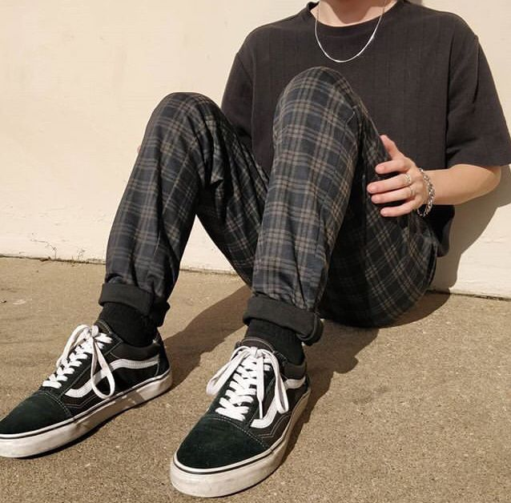
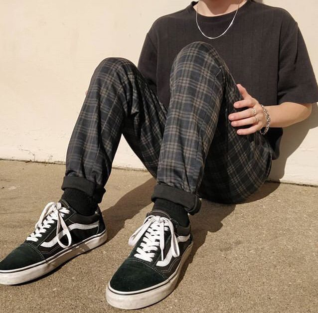
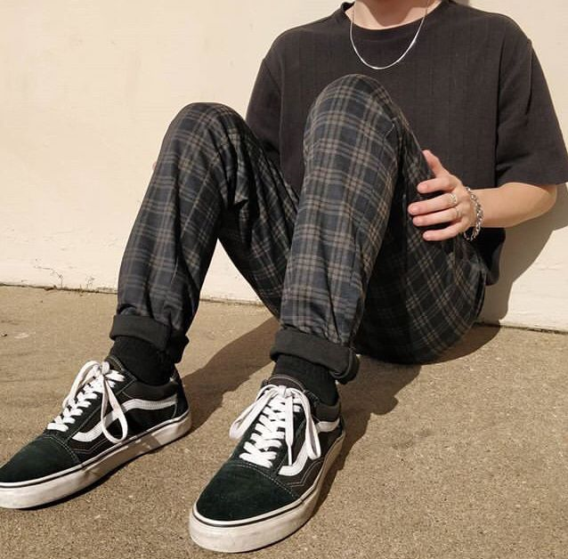

A moda masculina está constantemente evoluindo, e cada vez mais homens estão se tornando mais conscientes da sua aparência e estilo. Desde os clássicos cortes de cabelo até a moda streetwear, há algo para todos os gostos e estilos
As roupas masculinas tradicionais, como ternos e camisas sociais, ainda são consideradas uma parte essencial do guarda-roupa masculino, mas muitos homens estão optando por peças mais descontraídas e confortáveis para o dia a dia.
Com a variedade de opções disponíveis, é fácil encontrar roupas que sejam adequadas ao seu estilo e personalidade.
As dicas de moda são essenciais para quem quer se vestir bem e com estilo.
Algumas dicas simples podem ajudar a melhorar qualquer visual, como escolher roupas que sejam adequadas ao seu tipo de corpo, combinar cores e estampas de forma harmoniosa e investir em acessórios que complementem o look.
Além disso, é importante escolher roupas que sejam confortáveis e que você se sinta bem vestindo. Não há nada pior do que se sentir desconfortável ou deslocado em um determinado ambiente por causa da roupa que está vestindo..
As tendências de moda estão sempre mudando, e é importante estar atualizado com as últimas novidades.
Algumas das tendências mais recentes incluem peças oversized, roupas esportivas, padrões florais, cores vibrantes e tecidos sustentáveis.
As tendências também variam de acordo com as estações do ano, então é importante escolher roupas que sejam adequadas para o clima. No entanto, nem todas as tendências funcionam para todas as pessoas, então é importante escolher as que melhor se adequem ao seu estilo e personalidade.
